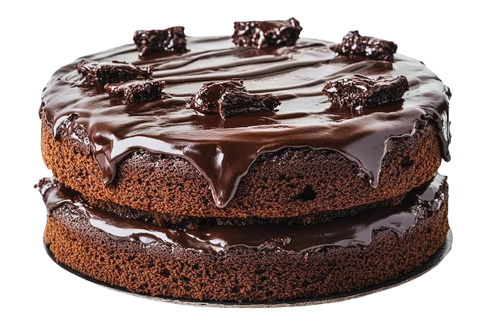

Ingredients:
- 1/4 pound unsalted butter at room temperature
- 1 cup sugar
- 4 extra-large eggs at room temperature
- 1 1/3 cups Hershey's chocolate syrup
- 1 tablespoon pure vanilla extract
- 1 cup all-purpose flour
For the ganache:
- 1/2 cup heavy cream
- 8 ounces good semisweet chocolate chips
- 1 teaspoon instant coffee granules
- Candied violets or edible gold leaf, for decoration (optional)
Directions:
- Preheat the oven to 325 degrees. Butter and flour an 8-inch round cake pan, then line the bottom with parchment paper.
- Cream the butter and sugar in the bowl of an electric mixer fitted with the paddle attachment until light and fluffy. Add the eggs, one at a time. Mix in the chocolate syrup and vanilla. Add the flour and mix until just combined. Don't overbeat, or the cake will be tough.
- Pour the batter into the pan and bake for 40 to 45 minutes, or until just set in the middle. Don't overbake! Let cool thoroughly in the pan.
- For the ganache, cook the heavy cream, chocolate chips, and instant coffee in the top of a double boiler over simmering water until smooth and warm, stirring occasionally.
- Place the cake upside down on a wire rack and pour the glaze evenly over the top, making sure to cover the entire cake and sides. You can tilt the rack to smooth the glaze. Decorate with candied violets, if desired, or gently crumble the gold leaf and place it on the center of the cake. Do not refrigerate.